She fed strangers for years
She fed strangers for years.
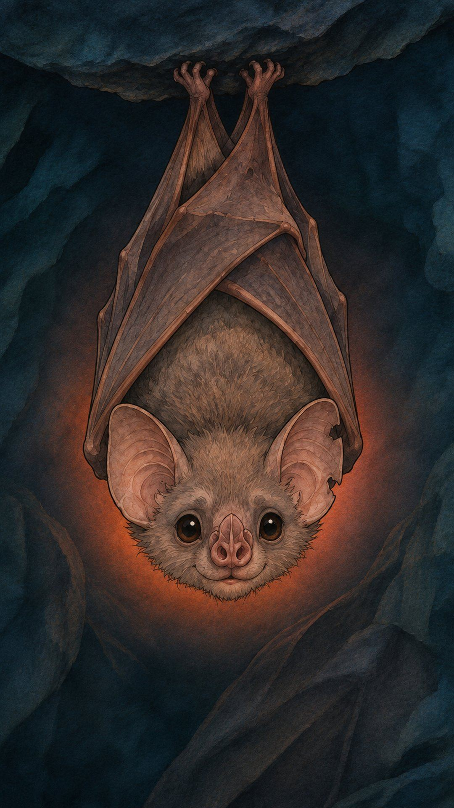
Tonight, she could die of hunger.
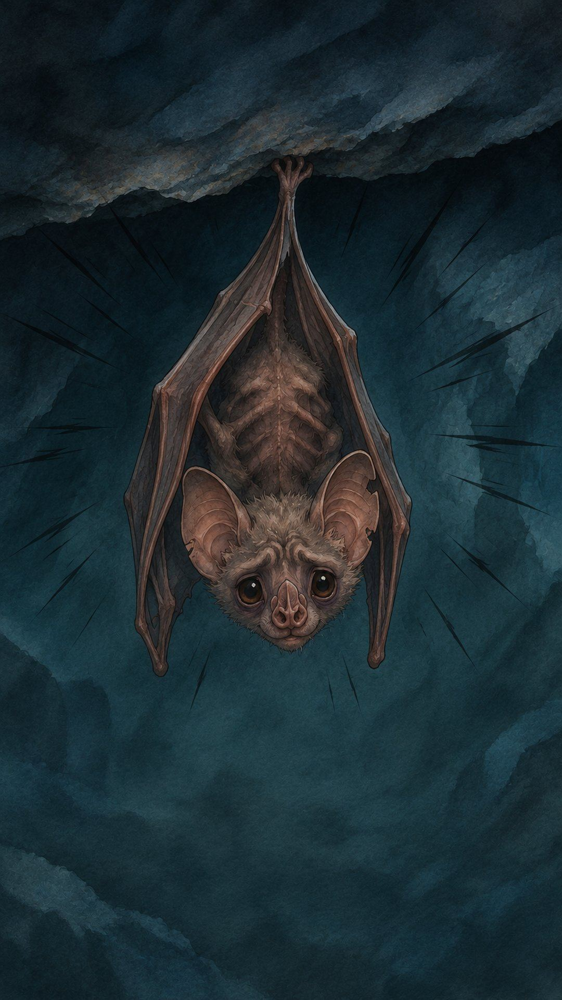
Vampire bats feed each other by spitting blood into each other’s mouths.
Usually, it’s family.
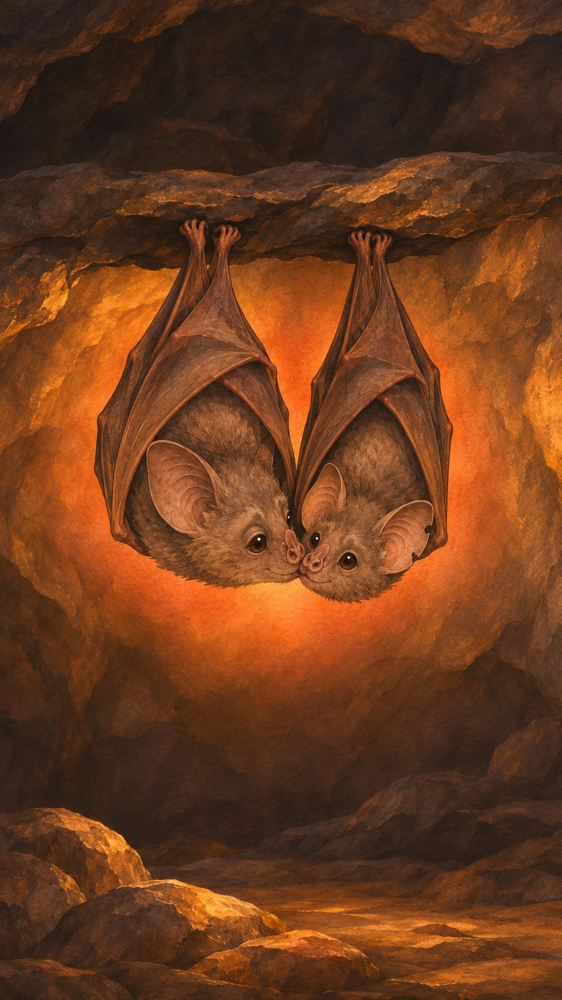
But she fed anyone.
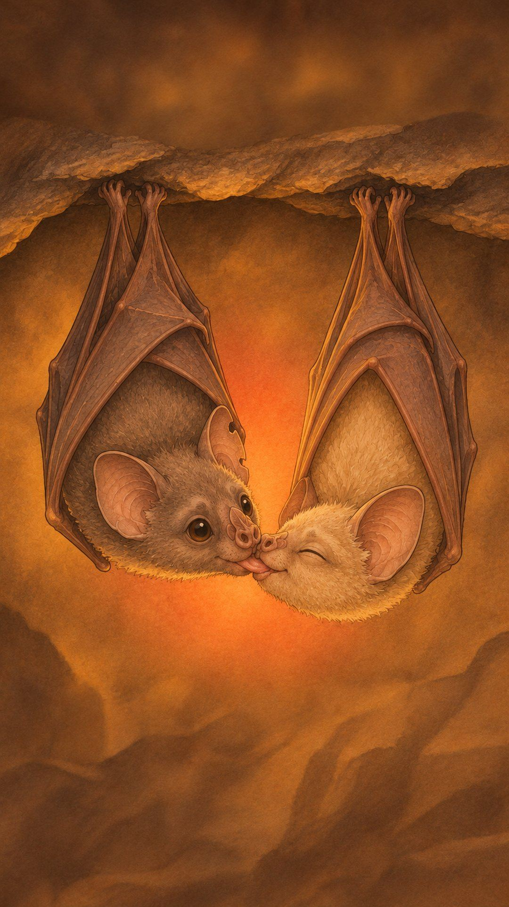
The others said, “Why? She’s not your family.”
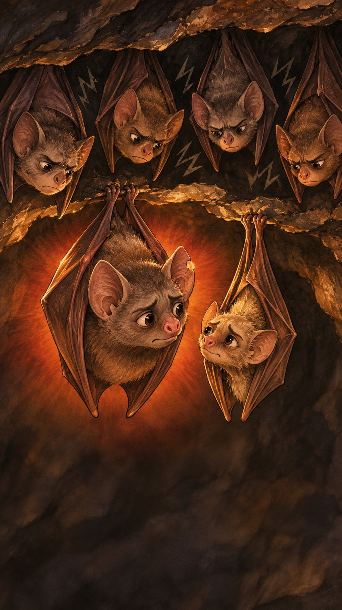
She said, “She’s hungry.”
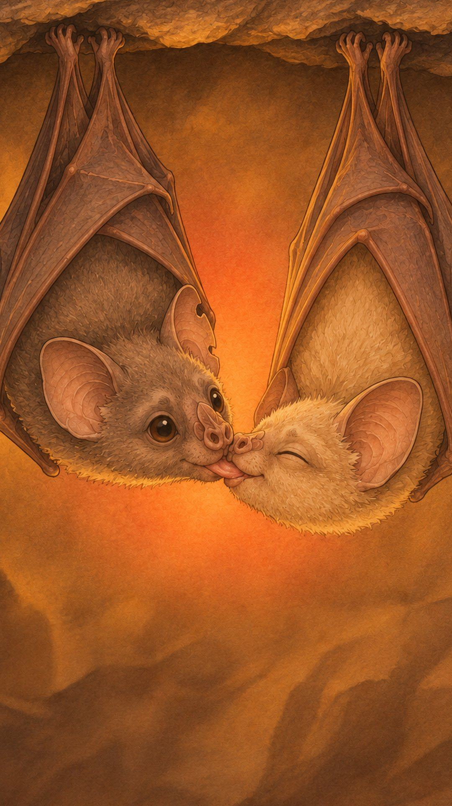
Then one night, she found no food.
The bat that always fed her was gone.
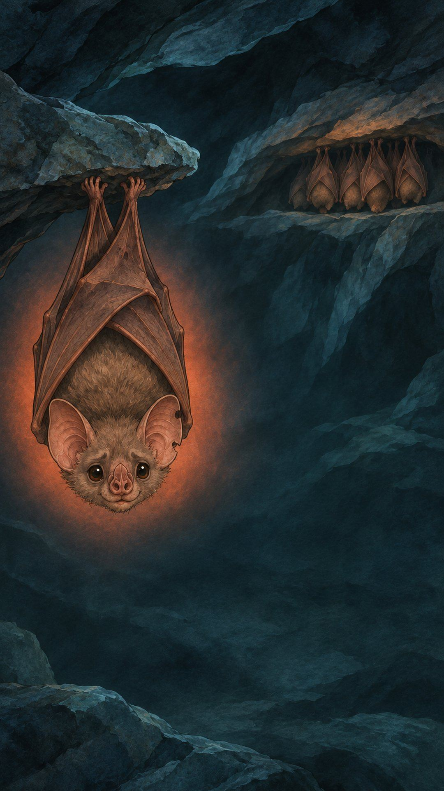
She went from bat to bat.
No one moved.
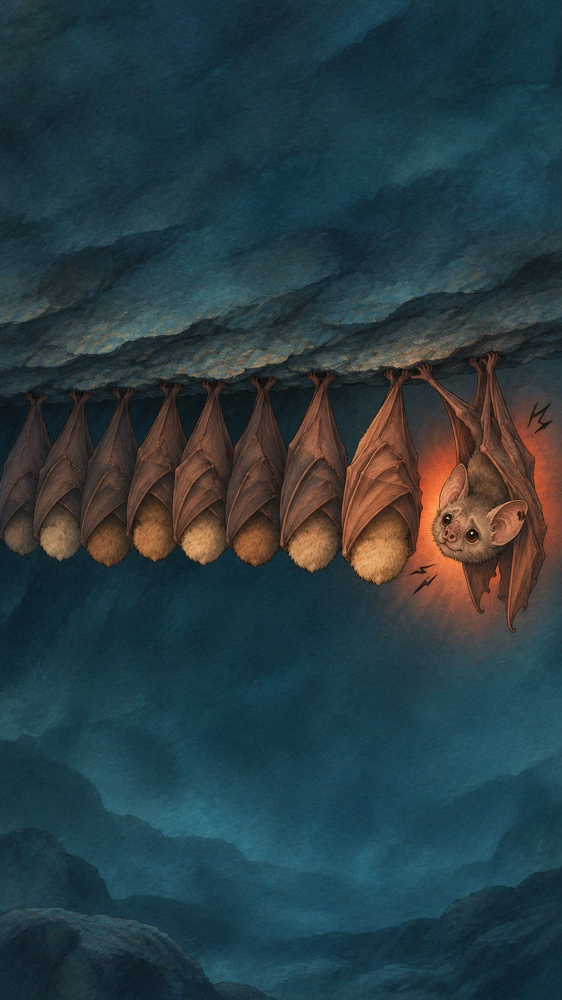
Then, in the dark, a small bat came close.
One she fed years ago.
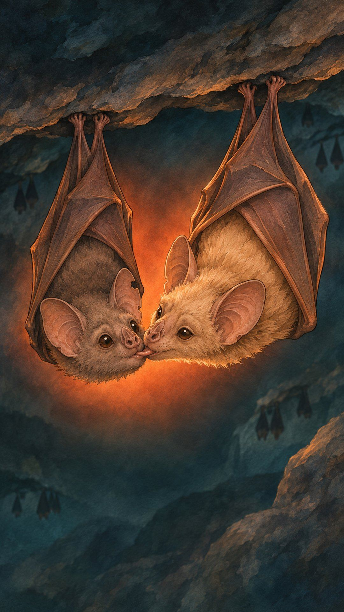
Then another.
And another.
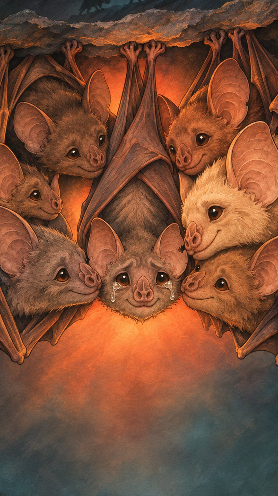
This story is made up, but the test is real.
Scientists really did take away a hungry bat’s main feeder.
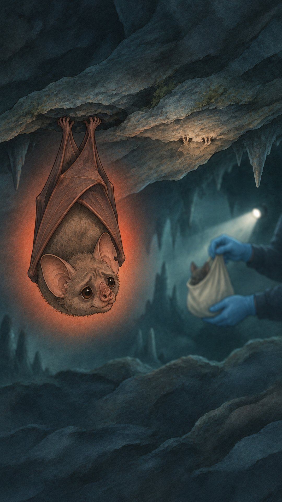
Bats that shared food with lots of others got more food.
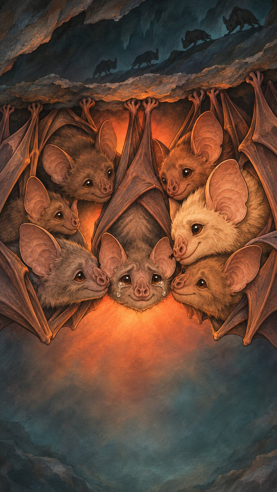
So who would feed you on your worst night?
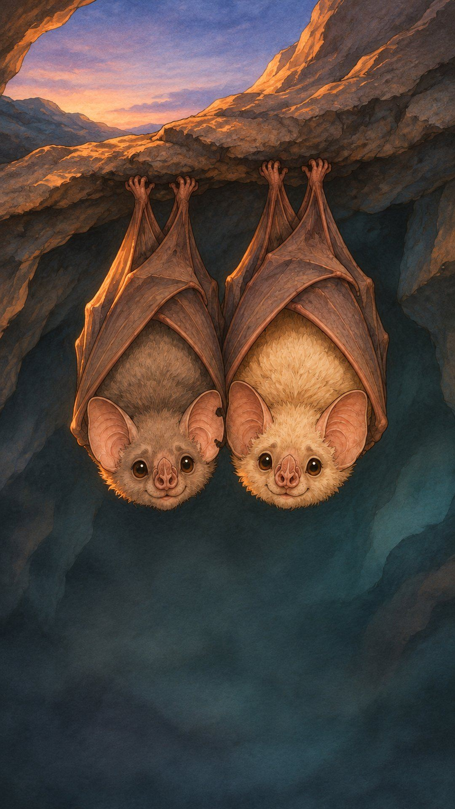
A fable based on real research: Carter, Farine & Wilkinson, Biology Letters, 2017 (14 captive vampire bats over 4 years). This bat and her story are made up, and no study saw one bat pay back another.